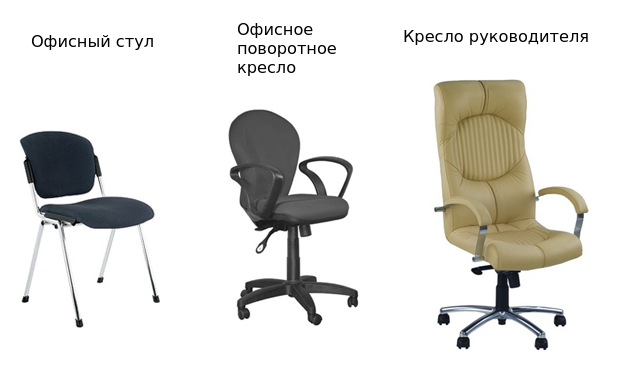
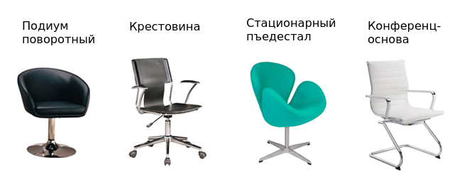

Перед тем, как выбирать стул для работы, необходимо определиться с его конструкцией. Ниже дан перечень основных конструкционных элементов для разных видов кресел (стульев).
Тип кресла
Существует несколько типов кресел.
Поворотное кресло - кресло, имеющее специальный поворотный механизм. Благодаря ему может поворачиваться вокруг оси на 360 °. Для облегчения пемещения кресла по полу имеет колесики. Обычно производится в двух вариантах:
- кресло руководителя – комфортабельное и эффектное (как минимум, по внешнему виду) изделие, выполненное из дорогих материалов. Имеет много регулировок. Обычно оснащается механизмом качания, позволяющим качаться в разные стороны, что можно использоваать для отдыха и расслабления. Удобная посадка обеспечивается качественными сиденьем и спинкой;
- кресло для персонала – простой и дешевый вариант кресла. Обычно отсутствуют подголовник и подлокотники. Кресло имеет механизм регулировки угла наклона спинки и высоты спинки, благодаря чему его можно подстроить под рост человека. Других регулировок, помимо регулировки высоты сиденья, обычно нет.
Конференц-кресло (либо офисный стул) – как правило, не содержит колесиков и регулировок, и, следовательно, не подойдет для долговременной работы. Это подходящий выбор для конференц-зала для проведения семинаров, собраний, переговоров. Подобный стоит стоит гораздо дешевле поворотного кресла. Обычно, имеется возможность складывать такие кресла-стулья в стопку, что помогает сильно сберечь пространство.
Кресло для гостей – выпускается с различным уровнем комфортности: от простого офисного стула до довольно комфортного мягкого кресла. Обычно такое кресло не содержит регулировок и предназначено для недолгого сиденья.
Кресло поворотное детское – похоже на «взрослую» модель, но содержит броский дизайн и более низкую посадку. Выбирая кресло для малыша, следует учитывать, что чем более ibhjrbq спектр регулировок имеет кресло, тем дольше кресло будет подходить ребенку, «вырастая» совместно с ним. Следует, однако, помнить, что механизмы регулировок должны быть крепкими и качественными.
Стул для ребенка – обычный школьный стул с жестким сидением из дерева или же поворотное кресло, не имеющее подлокотников. Детский стул (даже такой, в котором применяется в качестве основнания рама) нередко содержит механизм регулировки по высоте.

Основание (опорная часть кресла)
Мебель для сидения имеет несколько типов оснований.
Крестовина – пятилучевая звезда с роликами-колесиками. Количество лучей может варьироваться. Крестовина обеспечивает устойчивость кресла и дает возможность передвигаться в любом направлении, а так же вращаться вокруг собственной оси. Основной минус – это риск поломки колесиков. Данный вариант основания чаще всего встречается.
Важно знать: чем больше в крестовине лучей, тем устойчивее будет кресло.
Конференц-основа – прямоугольная рамка или четыре отдельных ножки. Кресло с таким основанием не имеет колесиков, а значит, не может плавно перемещаться по полу.
Поворотный подиум – стойка, обеспечивающая только вращение кресла. Колесиков не имеет. Данное основание обычно используется в креслах для посетителей.
Стационарный пьедестал – крестовина без колесиков. В более дорогих моделях позволяет вращать кресло вокруг оси.

Механизмы регулировки кресел
От количества и характера регулировок зависит комфортабельность самого кресла. Модели, считающиеся самыми удобными, имеют большое число разнообразных настроек.
Различают пассивный и активный параметры комфорта.
Пассивные параметры – это параметры комфорта, которые обеспечиваются без каких-либо специальных механизмов:
- подлокотники – в некоторых креслах можно регулировать положение подлокотников по вертикали или горизонтали. Таким образом снимается нагрузка с мышц спины, плеч и шеи;
- утолщения сиденья, утолщение спинки – утолщения обеспечивают удобную посадку и оптимальное распределение нагрузки тела человека на кресло;
- утолщенный изгиб переднего края сиденья – используется для предотвращения сдавливание ног под коленями.
Замечание: подлокотник следует регулировать так, чтобы угол изгиба локтевой области составлял около 90°.
Активные параметры комфорта – достигаются посредством специальных механизмов:
- стандартный механизм регулировки высоты – газлифт для регулировки высоты сиденья);
- механизм качания – дает возможность качаться в кресле. Кроме того, есть возможность фиксировать наклон спинки (и сиденья) в удобной позиции;
- механизм регулировки глубины сиденья (Слайдер) – механизм, позволяющий менять глубину сиденья. Такая регулировка используется людьми крупного телосложения;
- механизм постоянного контакта (Перманент-контакт) – возможность изменять высоту спинки и глубину сиденья. Механизм необходим для плотного контакта спинки кресла со спиной пользователя (в том числе и при качании);
- Freelock-механизм – изменнение угола наклона спинки посредством рычага. После чего происходит фиксация его в заданном положении. Число позиций фиксации не ограничено;
- FreeStyle-механизм – механизм для непрерывного качания с регулированием усилия на отклонение. Спинка плотно прилегает к спине человека и поддерживает его позвоночник;
- механизм Мультиблок – механизм для свободного качания в кресле с регулированием усилия на отклонение. Также позволяет фиксировать кресло в нескольких положениях. Мультиблок должен снабжаеться специальным механизмом «антишок», при котором сиденье и спинка остаются в первичном положении после снятия блокировки, что предотвращает удар спинки;
- Синхромеханизм - механизм синхронного отклонения – механизм для свободного качания. Позволяет менять угол наклона сиденья вместе с изменением угла наклона спинки в зависимости от положения тела человека.
Регулировка кресла
Для правильной регулировки высоты сиденья, следует следить, чтобы стопы человека полностью стояли на полу, а согнутые ноги составляли угол в 90°.
Высота спинки подбирается так: спинка должна быть удобной опорой для спины, а ее выпуклая часть в области поясницы должна хорошо поддерживать позвоночник.
Глубина сиденья должна составлять не меньше 0,5 - 0,65 длины бедра человека. Если этот параметр будет больше, то могут возникнуть проблемы с кровообращением в ногах, а если меньше, то будет ощущение дискомфорта.
Угол наклона спинки по отношению к сиденью (для кресел персонала) должен составлять почти 90°. Это хороший баланс между расслаблением и рабочим состоянием сотрудника. В более комфортабельных моделях, предназначенных для руководителя, этот параметр будет выше, но в пределах разумного. Плодотворно работать в положении «полулежа» вредно и вряд ли возможно.
Выбирая вариант регулировки кресла, стоит исходить из продолжительности рабочего дня:
- до 2 часов – должна быть регулировка высоты сиденья;
- до 4 часов – должна быть регулировка высоты сиденья, регулировка высоты и угла наклона спинки, глубины сиденья. Выбор следующий: Freelock, FreeStyle, Перманент-контакт - для персонала, механизм качания - для руководителя;
- свыше 4 часов – должна быть функция свободного качания, регулировка усилия отклонения спинки и сиденья, антишок-эффект, функция синхронного отклонения спинки и сиденья, механизм с постоянным контактом Мультиблок или Синхромеханизм.
Следует помнить, что большое количество регулировок и функций повышает стоимость кресла. Кроме того, из-за усложнения конструкции понижается прочность и надежность модели.
Советы по выбору кресла
- Людям с высоким ростом и людям с крупной комплекцией подойдет кресло, имеющее высокую спинку и широкое сиденье. Для худых людей низкого роста оптимально будет кресло с низкой спинкой и узким сиденьем.
- Офисные кресла требуют ухода и бережного отношения. Например, нельзя переносить мебель за подлокотники или за спинку.
- Кресла из кожи или кожезаменителя нельзя размещать рядом с отопительными приборами или другими источникам тепла. Иинимальное расстояние – 40-50 см. Их так же нельзя устанавливать на улице, так как эти материалы плохо переносят и воздействие ультафиолета.
- Запрещено становиться ногами на кресло, оно может выйти из строя. Нельзя пользоваться поломанной или неисправной мебелью, так как это может привести к травме.
- Для продления срока службы кресла не качайте и не вращайте его все время. Даже самые надежные механизмы при постоянной нагрузке быстро выходят из строя.
- Следует регулярно проверять крепления винтов и своевременное их подкручивать.
- Чтобы ролики лучше двигались, необходимо периодически их смазывать и очищать от пыли.
- Синтетическую ткань можно чистить и мыть посредством мыла или порошка.
- Кожу и кожзам допускается чистить только лишь специальными средствами. При непавильнм подборе чистящих средств 'ти материалы могут утратить свой цвет и на них возможно появление пятен. Перед тем, как применять средство, желательно опробовать его на скрытом участке обивки кресла.